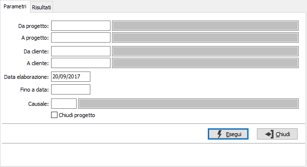
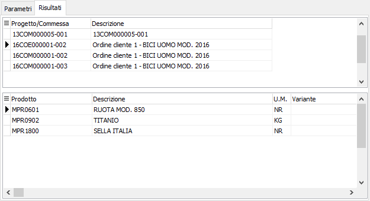

Scarico magazzini progetti
La procedura analizza le giacenze di un determinato progetto e provvede a generare automaticamente i movimenti di scarico del progetto ed eventualmente ad aggiornare il progetto considerandolo chiuso.

DA PROGETTO: eventuale codice del progetto, presente in anagrafica Progetti, da cui si desidera iniziare la selezione. Confermando a vuoto, la selezione inizia con il primo progetto valido. Sul campo è attiva la ricerca (F9) sull’anagrafica progetti.
A PROGETTO: eventuale codice del progetto, presente in anagrafica Progetti, a cui si desidera terminare la selezione. Confermando a vuoto, la selezione termina con l’ultimo valido. Sul campo è attiva la ricerca (F9) sull’anagrafica progetti.
DA CLIENTE: codice del cliente, presente in anagrafica, da cui si vuole iniziare la selezione. Confermando a vuoto, la selezione inizia dal primo cliente valido. Sul campo sono attive le funzioni di ricerca (F9).
A CLIENTE: codice del cliente, presente in anagrafica, con cui si vuole terminare la selezione. Confermando a vuoto, la selezione termina con l'ultimo cliente valido. Sul campo sono attive le funzioni di ricerca (F9).
DATA ELABORAZIONE: Indicare la data con cui si desidera siano registrati i movimenti di magazzino generati dal programma.
FINO A DATA: indica la data, relativa ai movimenti di magazzino, fino a cui devono essere analizzati i movimenti per determinare gli scarichi.
CAUSALE: inserire la causale di magazzino idonea alla generazione dei movimenti di scarico progetti. Sul campo è attiva la ricerca (F9) sulla tabella Causali magazzino.
CHIUDI PROGETTO: definisce se oltre a generare i movimenti di scarico deve essere chiusi il progetto (casella con segno di spunta).
La pressione sul pulsante Esegui inizia l'elaborazione e visualizza, nella pagina risultati, i progetti (riportati nella sezione superiore) ed i prodotti relativi (nella sezione inferiore). Per i prodotti viene riportato il magazzino e la quantità che sarà scaricata; in rosso saranno visualizzati eventuali prodotti con quantità negativa. Nella sezione superiore è possibile selezionare i progetti per cui generare i movimenti ed eventualmente da chiudere tramite il doppio clic del mouse, il tasto F11 oppure il menù del pulsante destro del mouse; è possibile selezionare tutti i progetti (F12) oppure deselezionare tutti i progetti (CTRL+F11).
Utilizzando i bottoni Stampa e Anteprima della toolbar è possibile stampare un report dei dati selezionati; la pressione sul bottone Salva della toolbar, previa conferma, effettua la generazione dei movimenti e l'eventuale chiusura dei progetti selezionati.
